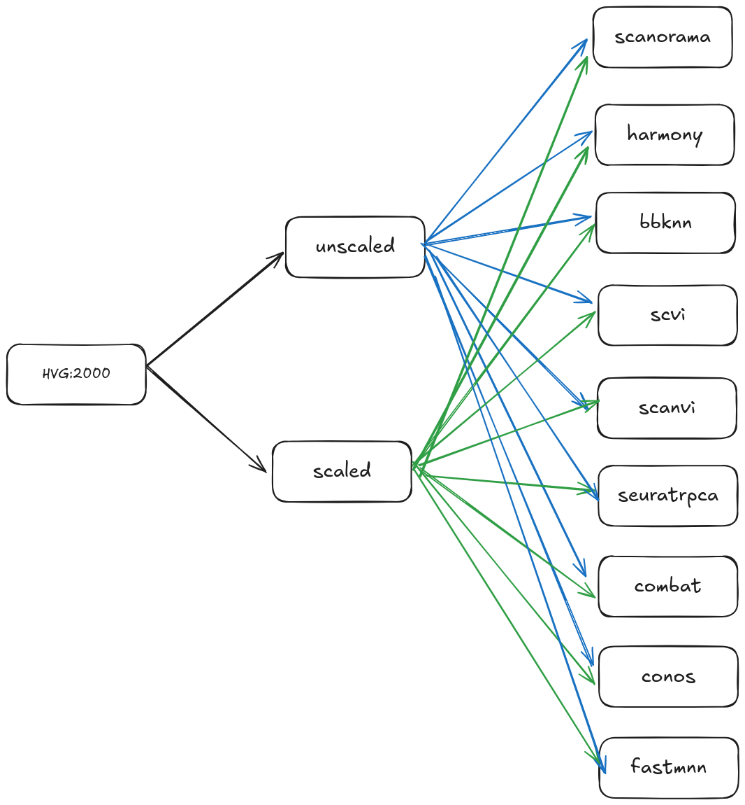
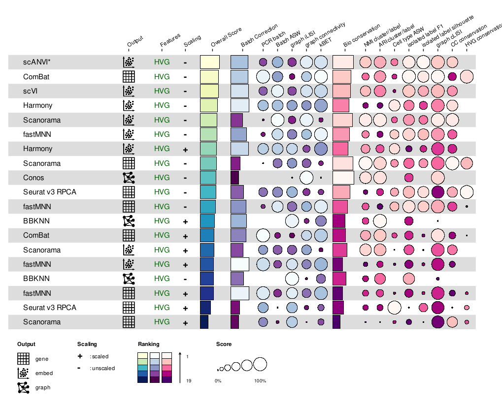

Integration methods benchmarking#
Why this matters#
For atlas level scRNA analysis, integration algrithoms are essential to keep biological signals while removing technical noises [Luecken et al., 2022]. The performance of integration methods highly depends on the data itself [Luecken et al., 2022]. Therefore we recommend to benchmark integration methods before you start integration.
Here, we use scib benchmarking pipeline to perform integration benchmark.
Process#
scib-pipeline offers a handy snakemake pipeline to perform integration benchmark. However, it lacks maintainance since two years ago. You might have to take some times to fix the pacakge dependencies conflicts.
The process is as follows:
setup environment and modify the configuration file.
run the pipeline.
visualize the results.
Configuration#
The scib-pipeline can allows you to tune three hyperparameters:
HVG numbers: the number of highly variable genes to use for integration.benchmarking methods: the integration methods to benchmark.scale_or_not: whether to scale the data before integration. Here are our benchmarking strategy: 
Our configuration file is as follows:
ROOT: /home/gilberthan/Desktop/disk2/202409_tooth_raw/scib
r_env : scib-R4.0
py_env : scib-pipeline-R4.0
timing: true
FEATURE_SELECTION:
hvg: 2000
# full_feature: 6000
SCALING:
- unscaled
- scaled
METHODS: # method name : ouput type(s)
scanorama:
output_type:
- embed
- full
harmony:
R: true
output_type: embed
bbknn:
output_type: knn
scvi:
no_scale: true
output_type: embed
scanvi:
no_scale: true
output_type: embed
use_celltype: true
conos:
no_scale: true
R: true
output_type: knn
seuratrpca:
R: true
output_type: full
combat:
output_type: full
fastmnn:
R: true
output_type:
- embed
- full
DATA_SCENARIOS:
test_small:
batch_key: Sample
label_key: coarse_anno_1
organism: mouse
assay: expression
file: /home/gilberthan/Desktop/disk2/202409_tooth/process/pre-intergration/big_data/20241008_core_pp_log1p_half_gene_small_HVG.h5ad
Run the pipeline#
The running code is simple:
snakemake --configfile configs/toothAtlas.yaml --cores 10
Visualize the results#
We use the the code in scib-reproducibility to visualize the results. The utils files can be found in github.
rm(list = ls())
library(tidyverse)
setwd("script/utils/scib/")
source('plotBestMethodsRNA.R') #== code from scib-reproducibility
source('plotSingleTaskRNA.R') #== code from scib-reproducibility
metricTest <- read.csv("../202409_tooth_raw/scib/metrics.csv")%>%column_to_rownames("X")
#setwd("script/scib_script/visualization/")
dir.create("../../../process/pre-intergration/scib_metrics/")
plotSingleTaskRNA(
csv_metrics_path = "../../../../202409_tooth_raw/scib/metrics.csv",
outdir = "../../../process/pre-intergration/scib_metrics/",
weight_batch = 0.4
)
Results#
This pipeline will generate beautiful figures.

This results show that scANVI performs the best on this dataset, aligning with the previous findings [Luecken et al., 2022]. Besides, scANVI can integrate with scArches[Lotfollahi et al., 2022] for users to easily ultilize our reference atlas to annotate their own data. Therefore, we adapted scANVI as our integration method.